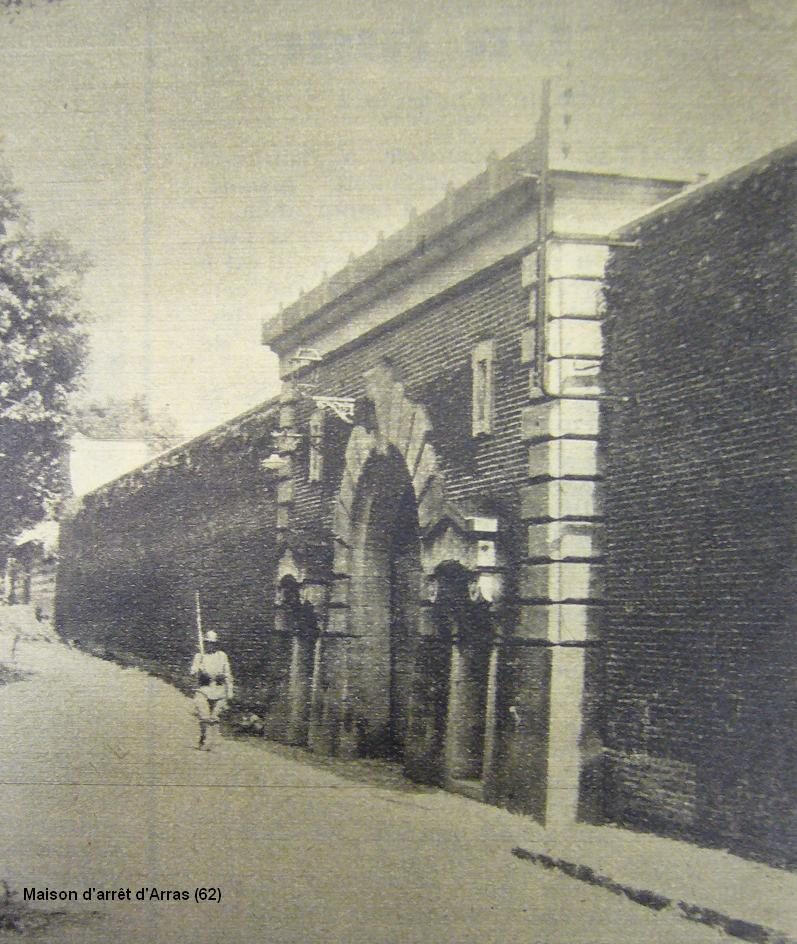
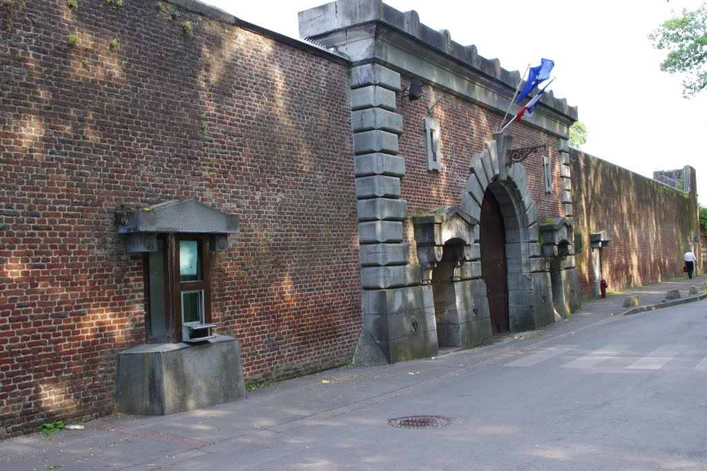
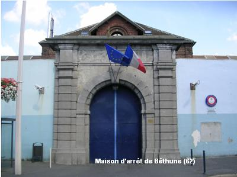
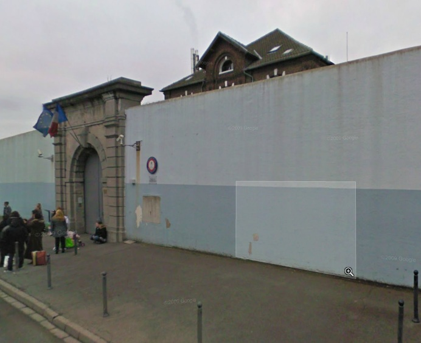
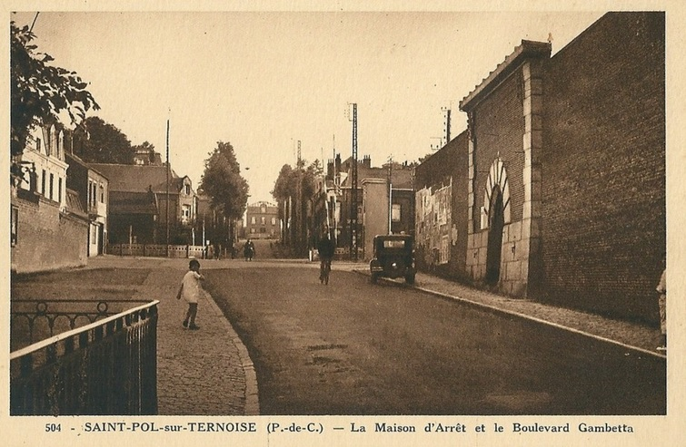

| Département | Images | Ville | Nom | Adresse | Période | Capacité | Histoire du lieu | Nombre d'exécutions |
| Pas-de-Calais (62) |   |
Arras | Prison Saint-Nicaise | 20, rue des Carabiniers-d'Artois | En service depuis 1866 | 200 places, 29 surveillants (1962) | Construite sur plans de l'architecte Eppelet, premier détenu le 30 octobre 1866. | Deux exécutions en 1947 et 1948. |
| Pas-de-Calais (62) |   |
Béthune | Maison d'arrêt, de justice et de correction | 106, rue d'Aire | En service depuis 1895 | 213 places (1962) 180 places (2015) |
Huit exécutions en 1909, 1913, 1933, 1934 | |
| Pas-de-Calais (62) | Boulogne-sur-Mer | Prison des Quatre Moulins | Sentier des Moulins (rue des Moulins) | Démolie par les bombardements alliés durant la Seconde Guerre Mondiale. | Trois exécutions en 1913, 1921 et 1930 | |||
| Pas-de-Calais (62) | Boulogne-sur-Mer | Château d'Aumont | 1, rue de Bernet | -1973 | 150 places, 22 surveillants | |||
| Pas-de-Calais (62) | Montreuil-sur-Mer | Maison d'arrêt et de correction | Rue Porte Becquerelle | 1827-1926 | Ouverte dans l'ancien couvent des Carmes, vieux de cinq siècles à sa fermeture en 1791, avec la Gendarmerie et le Tribunal. L'espace pénitentiaire fut démoli en 1937 pour construire le logement du capitaine de gendarmerie, puis celui du concierge du tribunal. | Aucune exécution | ||
| Pas-de-Calais (62) | Saint-Omer | Prison du Bon-Pasteur - Maison d'arrêt Saint-Sépulcre | 6, rue de Taviel | 1793-1991 | 75 places, 15 surveillants (1962) | Ouverte dans la prison du même nom sous la Révolution, fermée entre 1797 et 1802. Après sa fermeture, les bâtiments sont démolis mais la façade conservée. | Aucune exécution | |
| Pas-de-Calais (62) | Saint-Omer | Maison de justice | 1 bis, rue Sithieu | -194? | Située sur la motte castrale à proximité immédiate de la cathédrale et du tribunal, siège de la cour d'assises. | |||
| Pas-de-Calais (62) |  |
Saint-Pol-sur-Ternoise | Maison d'arrêt et de correction | Rue de Frévent | 1859-1943 | Fait face à la gendarmerie. Détruite lors des bombardements alliés. | Deux exécutions en 1912 et 1925. |
{kind=link}
{kind=link}
{kind=link}
{kind=link}
{kind=link}
{kind=link}